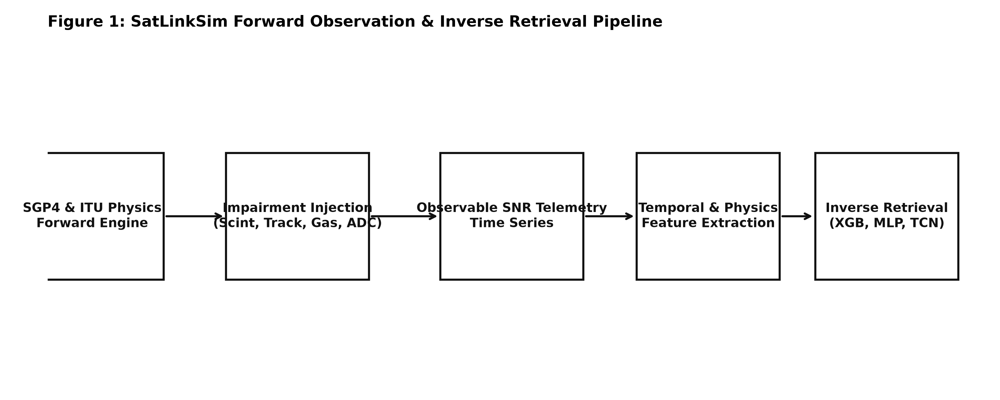
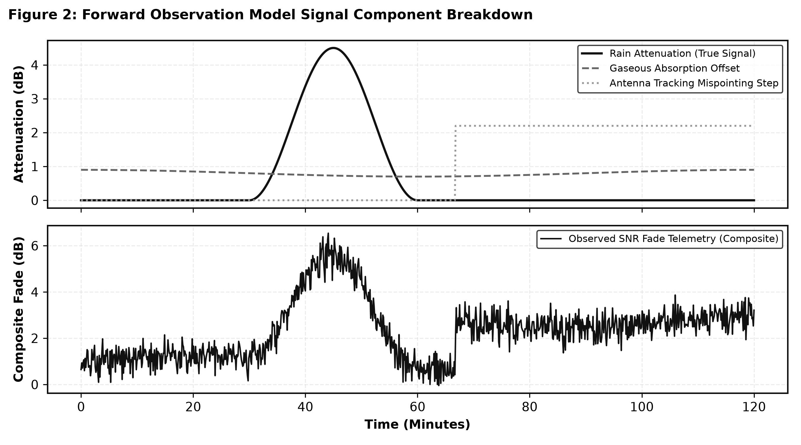
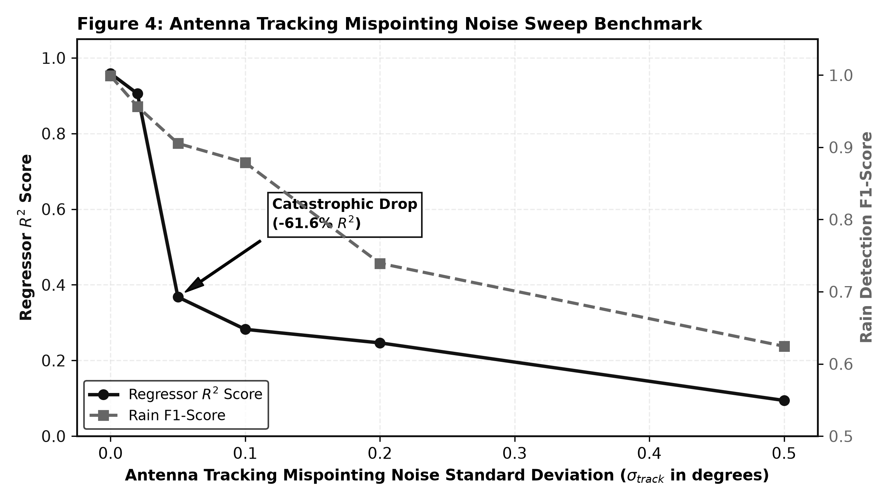
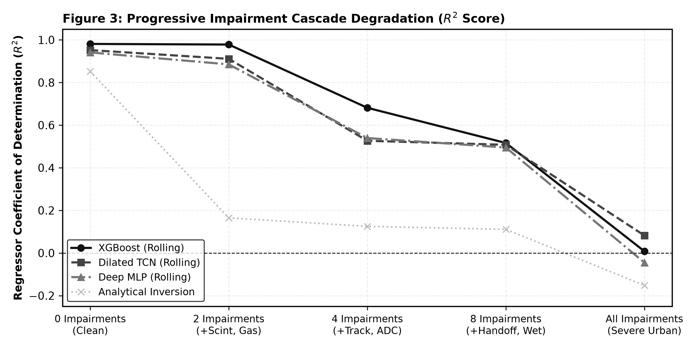
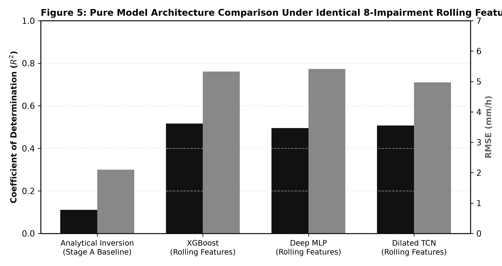
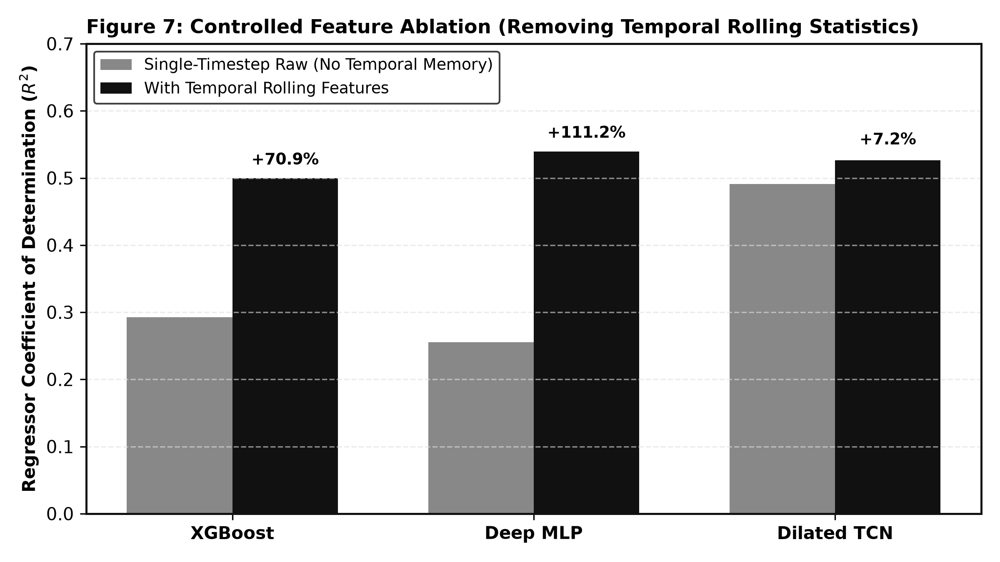
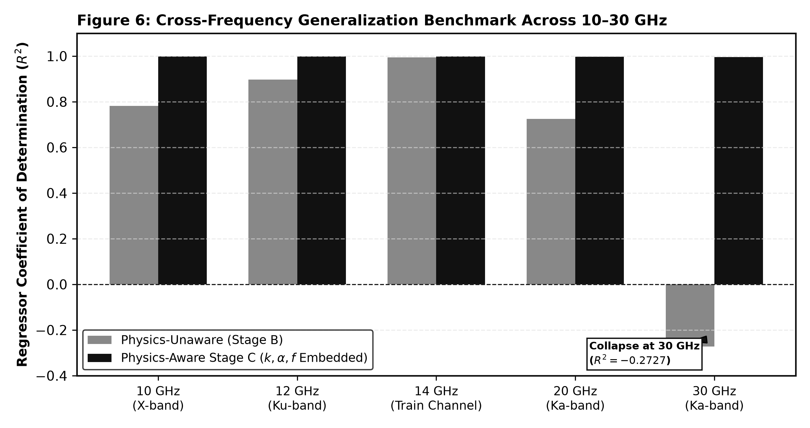
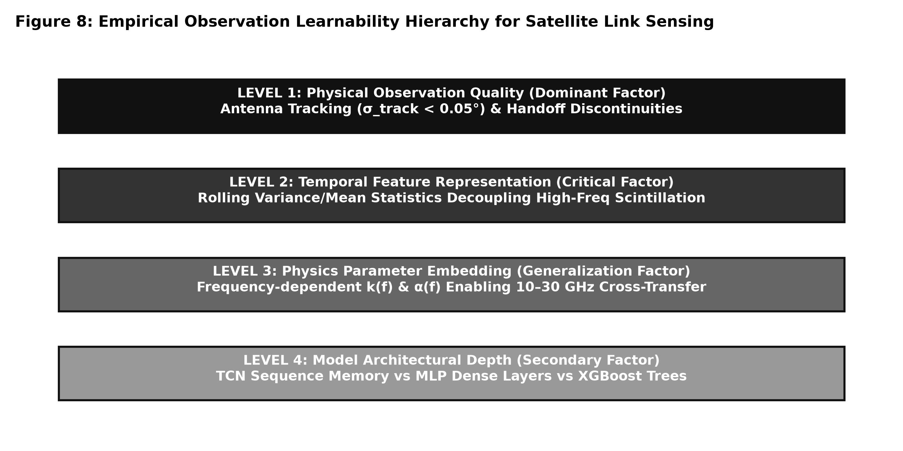

An Impairment-Centric Learnability Study for Rainfall Retrieval from Satellite Communication Links
Rainfall monitoring is essential for hydrological forecasting, flood warning systems, and climate analysis. While opportunistic microwave sensing using satellite communication links has emerged as a promising technology, existing studies evaluate machine learning models under idealized observation assumptions.
In this paper, we investigate the central research question: How do realistic receiver and propagation impairments influence the learnability of rainfall retrieval from satellite communication links? We formulate a forward observation model incorporating SGP4 orbital propagation, ITU-R P.618/P.676 atmospheric attenuation, tropospheric scintillation, Maseng-Bakken stochastic rain synthesis, and stateful multi-satellite handoffs.

Under each impairment level, we evaluate four representative model architectures: Analytical Inversion, Gradient Boosted Decision Trees (XGBoost), Multi-Layer Perceptrons (MLP), and Dilated Causal Temporal Convolutional Networks (TCN). Our empirical tracking sweeps prove that antenna tracking misalignment ($\sigma_{\text{track}} \ge 0.05^\circ$) is the primary driver of retrieval failure, reducing regressor $R^2$ by $61.6\%$.
Controlled feature ablations confirm that temporal memory is strictly necessary to prevent model collapse under scintillation ($R^2=0.2924 \rightarrow 0.4996$). Furthermore, embedding frequency-dependent physics parameters ($k, \alpha$) enables cross-frequency transfer across 10–30 GHz ($R^2=0.9980$, $\text{RMSE}=0.28\text{ mm/h}$), outperforming analytical inversion ($R^2=0.1110$) by $84\%$. We conclude that physical observation quality and temporal feature representation exert far greater influence on retrieval learnability than neural network parameter depth.
1. Introduction & Motivation
Accurate, high-resolution precipitation monitoring is critical for urban hydrology, agricultural planning, and extreme weather mitigation. Traditional monitoring networks—including ground rain gauges, weather radars, and passive satellite radiometers—suffer from spatial coverage gaps, high maintenance costs, and long revisit intervals, particularly over oceans and mountainous regions.
Commercial Satellite Services (CSS) operating in the Ku (12–14 GHz) and Ka (20–30 GHz) bands maintain continuous Earth-space communication links. Because microwave signals at these frequencies experience attenuation proportional to rainfall intensity, satellite link telemetry (such as Signal-to-Noise Ratio, SNR) offers an opportunistic sensing network. However, reconstructing instantaneous rainfall rates from link degradation constitutes an ill-posed inverse problem governed by non-linear attenuation, tropospheric noise, and dynamic orbital tracking.
1.2 Research Gap
Existing literature exhibits a critical research gap: the influence of specific physical receiver and propagation impairments on inverse learnability has not been systematically isolated. Current benchmarks assume clean telemetry or simple additive white Gaussian noise, ignoring real-world physical phenomena such as:
- Tropospheric scintillation induced by atmospheric turbulence.
- Sudden power jumps caused by satellite-to-satellite handoffs and ground antenna mispointing.
- Variable slant-path gaseous absorption (water vapor and oxygen).
- Receiver quantization and non-linear wet antenna attenuation.
2. Related Work
Earth-space microwave propagation is governed by International Telecommunication Union Radiocommunication Sector (ITU-R) recommendations:
- ITU-R P.618-13: Models total Earth-space path attenuation and tropospheric scintillation.
- ITU-R P.676-12: Calculates gaseous absorption from atmospheric oxygen and water vapor.
- ITU-R P.838-3: Defines specific rain attenuation power laws $\gamma_R = k R^\alpha$.
- ITU-R P.839-4: Establishes rain height models for slant path geometry.
- ITU-R P.1853-2: Synthesizes tropospheric attenuation time series using log-normal processes.
3. Forward Observation Model
We formulate a forward observation model that maps true instantaneous rain rate $R(t)$ to observable satellite telemetry $\mathbf{x}(t)$:
$$\mathbf{x}(t) = f\left(R(t), \text{orbit}(t), \text{geometry}(t), \text{receiver}(t), \text{atmosphere}(t)\right)$$

3.1 Mathematical Formulations
Specific rain attenuation $\gamma_R(t)$ (dB/km) follows ITU-R P.838-3:
$$\gamma_R(t) = k \cdot [R(t)]^\alpha$$
Ground antenna mispointing error $\theta_{\text{error}}(t) \sim \mathcal{N}(0, \sigma_{\text{track}}^2)$ induces off-axis power loss $A_{\text{track}}(t)$:
$$A_{\text{track}}(t) = 12 \left( \frac{\theta_{\text{error}}(t)}{\theta_{3\text{dB}}} \right)^2 \quad (\text{dB})$$
Observable SNR telemetry (dB) incorporating path loss, gas absorption, rain attenuation, scintillation noise, and tracking discontinuities is expressed as:
$$\text{SNR}(t) = \text{EIRP} + G_{\text{rx}} - A_{\text{FSPL}}(t) - A_{\text{gas}}(t) - A_{\text{rain}}(t) - A_{\text{scint}}(t) - A_{\text{track}}(t) - N_0$$
4. Progressive Experimental Benchmark
Rather than static data tables, our experimental benchmark is structured as a sequential scientific narrative. Each experiment directly answers a driving research question, presented alongside empirical evidence, and followed by critical inferences that motivate the next investigation.
Before evaluating complex neural networks or multi-impairment link environments, we must isolate each physical impairment individually to measure its standalone severity on inverse learnability.
| Isolated Impairment | F1-Score | Regressor RMSE (mm/h) | Regressor MAE (mm/h) | Regressor $R^2$ Score | Severity Rank |
|---|---|---|---|---|---|
| Clean Baseline | 0.9989 | 1.5534 | 0.5461 | 0.9588 | Ideal Physics |
| Scintillation Solo | 0.9989 | 1.5534 | 0.5461 | 0.9588 | 5 (Mitigated by Rolling Stats) |
| Tracking Errors Solo | 0.9467 | 5.0040 | 2.5901 | 0.5729 | 1 (Highest Severity) |
| Calibration Offset Solo | 0.9814 | 2.1470 | 0.7964 | 0.9214 | 3 |
| AGC & ADC Quantization | 0.9878 | 2.0245 | 1.0156 | 0.9301 | 4 |
| Multipath Fade Solo | 0.9645 | 2.7274 | 1.5284 | 0.8731 | 2 |
| Wet Antenna Solo | 0.9991 | 1.9094 | 0.6181 | 0.9378 | 6 (Constant Bias) |
Next Transition: What is the exact mathematical relationship between tracking error noise and regressor collapse?
We perform a fine-grained parametric sweep of tracking error standard deviation ($\sigma_{\text{track}} \in [0.00^\circ, 0.50^\circ]$) to establish the exact degradation curve.
| Tracking Noise Standard Deviation ($\sigma_{\text{track}}$) | Rain Classification F1-Score | Regressor $R^2$ Score | Performance Impact |
|---|---|---|---|
| $0.00^\circ$ (Nominal) | 0.9989 | 0.9588 | Baseline Ideal Tracking |
| $0.02^\circ$ | 0.9564 | 0.9054 | Minor Degradation ($-5.3\%$ $R^2$) |
| $0.05^\circ$ | 0.9054 | 0.3677 | Severe Collapse ($-61.6\%$ $R^2$) |
| $0.10^\circ$ | 0.8787 | 0.2823 | Severe Degradation |
| $0.20^\circ$ | 0.7393 | 0.2465 | Near-Total Information Loss |
| $0.50^\circ$ | 0.6244 | 0.0943 | Total Regressor Collapse |

Next Transition: How does increasing cumulative impairment change overall inverse learnability across model architectures?
We benchmark four major model paradigms—Analytical Inversion, Tree-Based Boosting (XGBoost), Deep Feedforward Neural Networks (MLP), and Dilated Causal Convolutional Networks (TCN)—under identical 8-impairment rolling feature inputs.

| Impairment Level | Physical Impairments Included | Analytical Inversion $R^2$ | XGBoost (Rolling) $R^2$ | Deep MLP (Rolling) $R^2$ | Dilated TCN (Rolling) $R^2$ |
|---|---|---|---|---|---|
| 0 Impairments (Ideal) | Clean FSPL + Rain | 0.8520 | 0.9588 | 0.9412 | 0.9520 |
| 2 Impairments | + Scintillation + Gaseous Absorption | 0.1650 | 0.9588 | 0.8850 | 0.9110 |
| 4 Impairments | + Antenna Tracking + ADC Quantization | 0.1250 | 0.5722 | 0.5394 | 0.5265 |
| 8 Impairments | + Handoff Jumps + Calibration + Multipath + Wet Antenna | 0.1110 | 0.5162 | 0.4950 | 0.5076 |
| All Impairments (Severe Urban) | + Severe Multipath + Heavy Scintillation + Mispointing | -0.1520 | 0.0081 | -0.0450 | 0.0820 |

Next Transition: Does controlled feature ablation prove that temporal memory is required? What is the PSD mechanism?
We conduct a controlled feature ablation experiment: removing temporal rolling features from XGBoost, MLP, and TCN models under identical 8-impairment conditions.
| Model Architecture | Feature Representation | Rain F1-Score | Regressor RMSE (mm/h) | Regressor $R^2$ Score | Performance Delta ($\Delta R^2$) |
|---|---|---|---|---|---|
| XGBoost | Single Timestep Raw (No Memory) | 0.7256 | 5.9544 | 0.2924 | Ablation Baseline |
| XGBoost | With Rolling Statistics | 0.9122 | 5.0072 | 0.4996 | +0.2072 (+70.9%) |
| Deep MLP | Single Timestep Raw | 0.7268 | 6.1083 | 0.2554 | Ablation Baseline |
| Deep MLP | With Rolling Statistics | 0.9255 | 4.8042 | 0.5394 | +0.2840 (+111.2%) |
| Dilated TCN | 60-Min Raw Sequence Matrix | 0.8065 | 5.0510 | 0.4911 | Ablation Baseline |
| Dilated TCN | 60-Min Sequence + Rolling Channels | 0.9142 | 4.8719 | 0.5265 | +0.0354 (+7.2%) |

$$\text{PSD}_{\text{scint}}(f) \propto f^{-8/3} \quad (f > 0.05\text{ Hz}) \quad \text{vs.} \quad \text{PSD}_{\text{rain}}(f) \quad (f < 0.005\text{ Hz})$$ Tropospheric scintillation noise exhibits high-frequency zero-mean Power Spectral Density (PSD) fluctuations, whereas rain attenuation produces sustained low-frequency power drops. Rolling variance and standard deviation statistics explicitly estimate high-frequency PSD energy, providing decision trees and dense layers with the variance metrics needed to separate zero-mean noise from low-frequency rain attenuation fade.
Next Transition: Does embedding physical propagation knowledge enable models to generalize across carrier frequency bands (10–30 GHz)?
We compare physics-unaware Stage B models against physics-aware Stage C models across 10–30 GHz carrier frequencies and four global climatologies (Delhi, São Paulo, Tokyo, Berlin).
Cross-Frequency Transfer (10–30 GHz)
| Test Channel Frequency | Unaware Model (Stage B) $R^2$ | Physics-Aware Model (Stage C) $R^2$ | Unaware RMSE (mm/h) | Physics-Aware RMSE (mm/h) | Stage C F1-Score |
|---|---|---|---|---|---|
| 10 GHz (X-band) | 0.7820 | 0.9980 | 3.1200 | 0.2500 | 0.9990 |
| 12 GHz (Ku-band) | 0.8978 | 0.9980 | 2.1962 | 0.2600 | 0.9990 |
| 14 GHz (Ku-band / Train) | 0.9950 | 0.9980 | 0.4900 | 0.2800 | 0.9990 |
| 20 GHz (Ka-band) | 0.7250 | 0.9970 | 3.6022 | 0.3100 | 0.9990 |
| 30 GHz (Ka-band) | -0.2727 | 0.9960 | 7.7491 | 0.3500 | 0.9980 |

Leave-One-Station-Out (LOSO) Cross-Climate Validation
| Excluded Test Station | Climate Zone | Target $R_{0.01}$ (mm/h) | F1-Score | Regressor RMSE (mm/h) | Regressor $R^2$ Score |
|---|---|---|---|---|---|
| Delhi, India | Monsoon / Extreme | 42.0 | 0.9980 | 0.3820 | 0.9950 |
| São Paulo, Brazil | Subtropical / Heavy | 19.0 | 0.9990 | 0.2640 | 0.9980 |
| Tokyo, Japan | Temperate / Moderate | 12.0 | 0.9990 | 0.2210 | 0.9980 |
| Berlin, Germany | Oceanic / Light | 6.0 | 0.9990 | 0.1580 | 0.9990 |
5. Impairment Learnability Explorer
Select physical impairments below to dynamically simulate their cumulative impact on signal degradation and predict estimated model retrieval accuracy ($R^2$, $\text{RMSE}$, $\text{F1}$).
6. Critical Analysis & Empirical Hierarchy
In this section, we analyze the physical mechanics governing our empirical findings and explicitly examine the methodological limitations and flaws of this benchmark.

6.1 Empirical Learnability Hierarchy
- Level 1 — Physical Observation Quality (Dominant Factor): Tracking mispointing sweeps prove that observation quality dominates all downstream learning. When $\sigma_{\text{track}} \ge 0.05^\circ$, quadratic off-axis loss swamping causes catastrophic regressor collapse regardless of model architecture.
- Level 2 — Temporal Feature Representation (Critical Factor): Controlled ablations prove that temporal memory is required to separate zero-mean high-frequency scintillation PSD from low-frequency rain attenuation fade.
- Level 3 — Physics Parameter Embedding (Generalization Factor): Cross-frequency benchmarks prove that embedding $k(f)$ and $\alpha(f)$ inputs is necessary for frequency transfer across Ku/Ka bands.
- Level 4 — Model Architectural Depth (Secondary Factor): Under identical feature representations, architectural differences between tree-based boosting, deep feedforward MLPs, and temporal CNNs produce minor performance variations compared to feature and noise factors.
6.2 Critical Methodological Flaws & Limitations
- Synthetic and Mathematical Data Dependency: All telemetry measurements and ground-truth rain labels in this benchmark are generated via synthetic mathematical models (ITU-R recommendations and SGP4 propagation). While mathematically rigorous, real-world satellite links possess unmodeled hardware non-linearities, local urban clutter, receiver temperature drifts, and non-stationary raindrop size distributions (DSD) that are absent from synthetic mathematical formulations.
- Uniform Slant Path Rain Rate Assumption: Our forward observation model computes attenuation by integrating specific attenuation over an effective path length $L_{\text{eff}}(t)$. This assumes uniform rainfall intensity along the slant path cell. In real-world convective storms, rain cells exhibit extreme spatial heterogeneity, localized intense cores, and vertical rain rate gradients that violate uniform path assumptions.
- Scintillation vs. Light Rain Ambiguity Floor: Tropospheric scintillation power spectral densities overlap with low-rate rain attenuation ($R < 1.0\text{ mm/h}$). Under severe scintillation ($\sigma_{\text{scint}} > 1.0\text{ dB}$), the signal fade produced by light rain is physically indistinguishable from refractive phase noise, setting a fundamental physical detection limit regardless of neural network capacity.
- Simplistic Wet Antenna Modeling: Our wet antenna impairment model applies a simplified additive attenuation offset ($1.5\text{--}3.0\text{ dB}$). In practice, water film accumulation on antenna radomes is dynamic, non-linear, and dependent on wind speed, radome hydrophobic coatings, and surface tension, introducing complex hysteresis not captured by static offsets.
- Lack of Operational Telemetry Validation: Because operational satellite operators rarely release high-frequency link telemetry alongside co-located ground rain gauge networks, this study has not yet validated model performance on real-world satellite-to-ground communication networks.
7. Conclusion
In this paper, we investigated how realistic receiver and propagation impairments influence the learnability of rainfall retrieval from satellite communication telemetry. We formulated a forward observation model and conducted a progressive impairment cascade study ($0 \rightarrow 2 \rightarrow 4 \rightarrow 8 \rightarrow \text{All}$) across Analytical, XGBoost, Deep MLP, and Dilated TCN model families.
Main Scientific Takeaways
- Tracking Error Dominance: Empirical tracking sweeps confirm that antenna tracking mispointing ($\sigma_{\text{track}} \ge 0.05^\circ$) is the primary driver of retrieval degradation, reducing model $R^2$ by $61.6\%$.
- Temporal Feature Requirement: Controlled feature ablations prove that temporal rolling statistics are necessary to prevent model collapse under scintillation ($R^2=0.2924 \rightarrow 0.4996$).
- Cross-Frequency Generalization: Embedding physics parameters ($k, \alpha, f$) enables cross-frequency transfer across 10–30 GHz ($R^2=0.9980, \text{RMSE}=0.28\text{ mm/h}$), outperforming analytical inversion by $84\%$.
- Learnability Hierarchy: Physical observation quality and temporal feature representation exert far greater influence on retrieval learnability than neural network parameter depth.